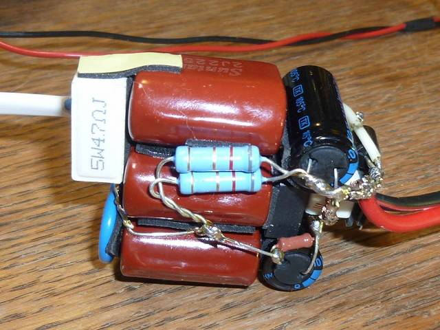
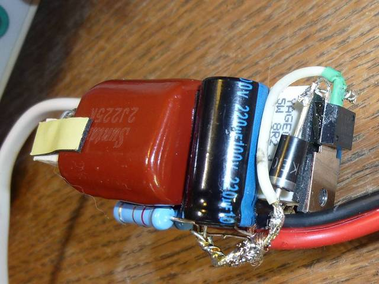
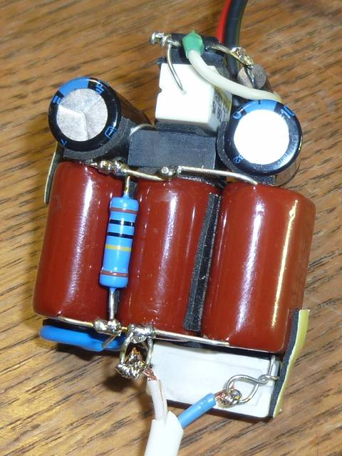
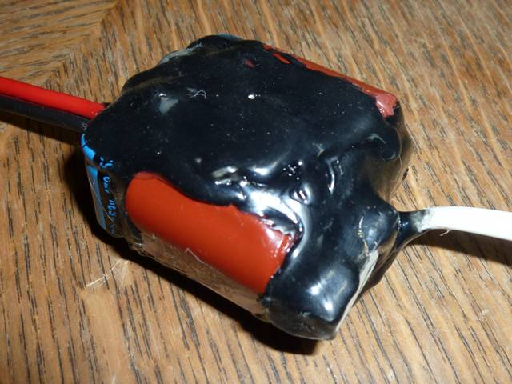

Описывается конденсаторный драйвер для светодиодов на ток 300мА.
Для моей светодиодной лампы мне нужен был драйвер. Заказанные на ebay драйверы ехали медленно, ждать было невтерпёж. С импульсными схемами я на Вы, вот и стал собирать конденсаторный драйвер.
Схему взял вот отсюда.
Вот она:
Схема эта отличается от обычных наличием защиты от обрыва нагрузки. Без такой защиты электролитические конденсаторы могут бабахнуть при обрыве нагрузки.
Это цены моего местного магазина радиодеталей:
| Деталь | Кол-во | Сумма |
|---|---|---|
| Конденсатор К73-17 2.2 мкФ/630В | 3 | 75 |
| Диодный мост RS207 2A, 600V | 1 | 10 |
| Резистор 5 Вт 4.7 Ом | 1 | 10 |
| Резистор 2 Вт 1.0 МОм | 1 | 6 |
| Варистор 14N471K (470В) | 1 | 12 |
| Резистор 2 Вт 8.2 Ом | 2 | 12 |
| Конденсатор электролитический 220/100V | 2 | 26 |
| Резистор 5 Вт 8,2 Ом | 1 | 10 |
| Стабилитрон 1.5KE100A | 1 | 14 |
| Тиристор 2P4M | 1 | 15 |
| Итого: | 190 | |
Как видите, драйвер получился недешёвый, надеюсь, это компенсируется его надёжностью.
Драйвер спаян объёмным монтажём:

Вот ещё пара ракурсов:


После испытаний покрыт чёрным термоклеем:

Вроде работает:)
© AHTOXA, 2013.
{kind=link}